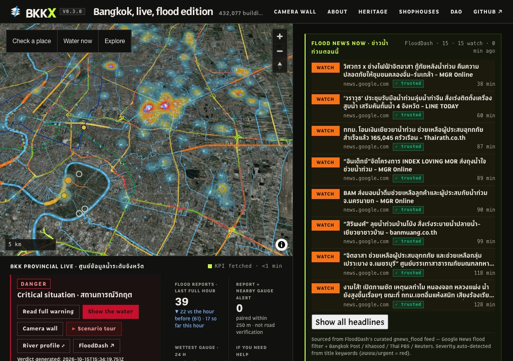

Why this platform exists
Evidence baseLoading official report dataset…
ASEAN Smart Cities Network · Independent observatory
Follow a city, inspect the project record, or test a claim against its source. Published evidence sets the limits of every finding.
ASEAN Smart Cities Network · Demonstrations
Flood intelligence in the field, at the operations desk, and on the map. Data made useful for cities.
A tablet-based flood dashboard demonstrated on a flooded street, connecting conditions on the ground with mapped data.
This video could not play here. Open the video directly to try again.
Loading regional headlines…
ASEAN Smart Cities Network
134 projects tracked since 2018. Not one public platform has asked how the network is performing against its own goals. This one does.
ASCN Operational Intelligence · Applied Digital Twins
What is an urban digital twin? Rather than a static PDF report or a conventional map, an urban digital twin connects a city’s 3D spatial geometry with live sensor feeds, weather models, telemetry, and civic infrastructure. It enables city operators, emergency teams, and citizens to track real-time conditions — from canal gates and rainfall radar to air quality and traffic — as they unfold on the ground. Explore the live digital twins built for ASEAN member cities below:



Why this platform exists
ASEAN Smart Cities Network · Applied Technology
Live systems, not a roadmap. Two national watches, three country dashboards, seven ASCN city dashboards — each one built inside a city, on data the city already had.
All links below are live and public. No login, no request form.
What this actually is
Innovation-as-a-Service sits inside a city agency and builds the one screen that speeds up the one decision that actually gets made — on data the city already has, with no new hardware, in two weeks.
One screen. One decision. Two weeks.
01
Featured · National watches
The two systems the rest of the portfolio is built on. Both are live, free, and run on public data that already refreshes on its own.
flood.nonarkara.org
Every Thai province on one flood picture. Nine public sources — DDPM, Hydro-Informatics Institute, the Royal Irrigation Department, the Meteorological Department and the Pollution Control Department — streamed and refreshed every 3 to 60 minutes.
It is not more sensors. It is the data, cooked: ingest, normalise, persist, score, explain. A resident opens My Area and sees the latest evidence, why it matters, and shelters to confirm with the local authority. Roughly 70,000 pieces of customised information cover every village in Thailand.
air.nonarkara.org
A 24/7 air-quality and PM2.5 watch that ranks every province in the country on the same public data, so a number in Udon Thani can be compared honestly with a number in Bangkok.
Same discipline as FloodDash: one metric, one method, every province, no exceptions. What you see is what the public sources say, with a three-day forecast so the trend is visible before the number turns.
02
Country dashboards
The same question asked of a nation instead of a ward: what is happening, how bad is it, and who is affected.
malaysia.nonarkara.org
River gauges, MET warnings and city signals in one national view — the God Mode pattern applied to a whole country.
Open ↗carbon.nonarkara.org
Satellite-based carbon stock, forest loss, fire and emissions for any province — or any area you draw on the map — with sources and stated uncertainty.
Open ↗globalmonitor.nonarkara.org
A planetary comparative and macro intelligence console — the comparative view, when a city decision is really a regional one.
Open ↗03
ASCN member cities
The City Hub pattern: give it a city name and it maps the city and absorbs whatever data exists. Seven ASCN cities, each with its own operational surface.
phuket.nonarkara.org
Operations surface for the city that pairs with Las Vegas under the US–ASEAN Smart Cities Partnership.
Open ↗atlas.nonarkara.org
A browser model of Bangkok, block by block — 432,077 real OpenStreetMap buildings, terrain, air quality, rain radar, land prices, rail and canals.
Open ↗chonburi.nonarkara.org
Chonburi Town Center — a town-centre operations console built as a first screen, not a finished product.
Open ↗cnx.nonarkara.org
Operations war room for Chiang Mai, the northern city where the Axiom lab is co-founded with Chiang Mai University.
Open ↗jakarta.nonarkara.org
City atlas for Indonesia’s capital, built on the same hub that generalises to any ASCN city.
Open ↗hcmc.nonarkara.org
City atlas for Vietnam’s largest metropolis — the Mekong delta’s decision surface.
Open ↗kuching.nonarkara.org
City atlas for Greater Kuching, Sarawak — the east Malaysia surface on the same stack.
Open ↗kl.nonarkara.org
The national capital surface — river gauges, air quality and city signals on the same hub as every other city here.
Open ↗Hover or focus a city to see its live surface. Only cities with a working digital twin show a preview; the preview is a convenience, never the only way to reach the dashboard.
04
Operational fieldwork & command dashboards
From floodwater on street level to multi-screen municipal operations rooms and predictive models.
A ruggedized tablet-based dashboard operated on flooded streets, correlating physical water marks with live sensor telemetry.
Watch field recording ↗Telemetry layers, live CCTV camera grids, and municipal GIS integrated into unified situation dashboards for emergency war rooms.
Watch operations recording ↗High-resolution terrain elevation masks, 3D flood simulations, and drainage bottleneck analytics informing municipal infrastructure investments.
Watch modelling walkthrough ↗05
Public platforms
The lab these dashboards are built in, the browser-based computer-vision workbench, and the regional liveability index.
axiom.nonarkara.org
Smart-city dashboards and GovTech systems for governments. 66 systems across five countries, 41 of them in production, drawing on more than 247 public data sources.
Open ↗vision.nonarkara.org
A public classroom and operational workbench for computer vision on Thailand’s open traffic and municipal CCTV. Neural inference runs in the client browser — no camera video leaves the city.
Open ↗slic.nonarkara.org
Regional benchmarking across five liveability pillars — in which mayors decide what livability means, rather than receive it.
Open ↗06
Provenance
None of the rows above began as a dashboard. The method behind them was not designed in a summit working group — it came out of two hackathons and one week standing in front of a wall of screens in Taipei.
2020 · Expo 2020, Dubai
A flood-warning platform built by Thai practitioners that won on the world stage at the Hackathon at Expo 2020. The first version of the argument this page makes: a city should not need to buy software in order to see a flood coming.
Techsauce ↗ depa Thailand ↗2023 · 24 September, Taipei
A Team of Excellence in the Presidential Hackathon International Track, awarded by the President of Taiwan. Free clean drinking water run by municipalities under their own rules — Nakhon Si Thammarat, then Rangsit, then Sukhothai Thani — and the depa Smart Living Excellence award in 2026. This is where the 4Ps above come from: a prototype, a pilot, then the boring work of changing the rules.
The Kommon ↗2023 · 25 September, Taipei
The same week: the Taipei Intelligent Operation Center, and a city dashboard released open-source under AGPL-3.0. A whole city on one screen, used by the people who decide to spend the money. That is where every dashboard on this page comes from.
Taipei City Dashboard ↗Stolen, improved and credited: the ideas came from Taipei, the adaptation is ours, and the credit is in the source code. The network was founded in 2018. This method is three.
Partner With Us
ASCN Innovation-as-a-Service is an open testbed built by ASEAN city practitioners. We help member cities turn static datasets into live operational tools.
Contact ASCN Team ↗The public record · 28 April 2018 → 2026
ASCN was founded in 2018. This review covers 2018–2026. This page counts what was committed to it, what it holds, and what can be shown to have reached a citizen — separating money announced from money moved, and activity held from outcome delivered.
Every figure below carries its source and its evidentiary status. Committed is not disbursed. An output is not an outcome.
Before you can ask whether ASCN worked, you have to ask what ASCN spent. Across the published record since 2018, that question cannot be answered from the public record — not because the money did not move, but because nobody is obliged to say.
USD 0
ASCN is a coordinating platform, not a funding pool. It coordinates, it does not finance. Every figure below is money that flows around the network, through bilateral programmes, trust funds and development banks.
0
The network has no systematic tracking of total investment flows. There is no published ASCN-wide figure for money committed, disbursed or absorbed in eight years of M&E cycles — because the network does not collect one.
13.4%
134 projects tracked in the September 2025 M&E cycle. 18 completed. 108 still ongoing. A project counted as "ongoing" in year five has not delivered, and the report does not say how long it has been ongoing.
Membership and project counts are quoted here at their stated cut-offs, which differ by source: 35 cities at 30 September 2025 (M&E 2025), 38 at January 2026 (official ASCN roster, after Dili joined with Timor-Leste's accession).
00
The founding instruments · 2018–2019
Before the count of projects, the count that matters is the count of the machinery built to evaluate them. The founding documents tell a precise story about why seven years of this network went unmeasured.
Apr 2018
Establishes ASCN as a Singapore proposal. Scope capped at "up to three cities from each AMS". 26 pilot cities listed as of 23 March 2018. No project target. No funding total. No deadline beyond the 2025 planning horizon.
Jul 2018
Each city submits a SCAP with four parts, including exactly two priority projects. That is the entire founding portfolio: 26 cities × 2 projects = 52 projects. Cities were to report status annually to the Secretariat; no such consolidated report has been found.
Aug 2019
One year in, ASCN has still 26 cities. The Terms of Reference mandate periodic project evaluation under an M&E Framework — which is recorded in the same report as not yet finished, and deferred to 2020.
2020 →
The instrument that would have made the network measurable against its own goals slipped past the year it was needed. Every cycle since has counted projects instead — because that is what the framework was built to do.
Sources: ASCN Concept Note (2018), Consolidated SCAPs (as of 8 July 2018), ASCN 2019 Annual Meeting Report. Note that three files in the source library — 09, 13 and 14 — are the same 2019 report in different revisions, not three independent sources. One further document in the library, a Thai Cabinet submission, is an image-only scan with no extractable text and could not be cited.
0
The only self-reported performance series
Strip out the frameworks and the toolkits and ASCN reports one thing about itself in every cycle: how many projects exist, and what share is finished. Five data points, four reports, one direction.
| Cycle | Projects | Ongoing | Completed | Completion rate |
|---|---|---|---|---|
| 2021 baseline quoted by the 2022 report | 65 | — | — | — |
| 2022 cut-off 21 Sep | 77 | 58 | 2 | 2.6% |
| 2023 cut-off 14 Aug | 86 | 67 | 2 | 2.3% |
| 2024 cut-off 25 Sep | 108 | 81 | 11 | 10.2% |
| 2025 cut-off 30 Sep | 134 | 108 | 18 | 13.4% |
The portfolio more than doubled in four years — 65 to 134 projects, a 106% increase. The completion rate improved from 2.6% to 13.4% — more than fivefold, and the strongest positive trend in the entire record. It is still true that eight in ten projects tracked in 2025 have not finished.
Both facts are real. The second is the one that matters to a resident, and it is the one ASCN has never put on a slide.
The 2022 and 2023 reports state no reporting period at all; the 2024 and 2025 reports state one. Cut-offs drift from mid-August to late September, so the four cycles are not a perfectly uniform annual series. The 2025 figure of 134 is verifiable twice within a single document: stated in prose, and reconcilable from 116 appendix-A items plus 18 appendix-B items.
A
Ledger · Funding
Partner programmes, not ASCN grants. The status column is the point: these are envelope figures announced at partnership level, and the public record does not resolve how much reached an ASCN city.
| Partner / programme | Announced | Coverage as stated | Status |
|---|---|---|---|
| Japan — SmartJAMP JBIC loans + JOIN equity | JPY 250B~USD 2.4B | 26 ASCN cities, 10 sectors | Announced |
| Australia — AASCTF ADB-managed, 2019–2024 | AUD 20M~USD 14M | 24 cities, 8 countries | Announced |
| China — Smart City Cooperation Leaders' Statement 2019 | — | 8 Chinese cities paired with 26 ASCN cities | Undisclosed |
| Korea — ASPP ASEAN-Korea Cooperation Fund | Not stated | Regional · training and Master's scholarships | Undisclosed |
| United States — USASCP / USTDA | Multiple grants | Davao, Da Nang, Ho Chi Minh City | Announced |
| EU — Smart Green ASEAN Cities UNCDF-implemented, 2014–2020 | EUR 200M+ | Regional | Announced |
| ADB — ASEAN Catalytic Green Finance Facility | USD 300M+ USD 1.9B co-financing | ~30 projects in pipeline | Pipeline, not disbursed |
Two things are worth being precise about. First, none of the four M&E cycles attaches a single currency amount to anything: the reports name ADB, JICA, USTDA, AASCTF, SmartJAMP, Aus4ASEAN, KOICA and BMBF as funders, and never state what any of them paid. The envelope figures above come from partner programme documentation, not from ASCN's own monitoring. Second, no source itemises what any envelope paid for, per city, per project. Individual ASCN projects in the tracker range from USD 100K to USD 6.7B, and the gap between those two ends is where both the network's coordinating role and its accounting vacuum sit.
B
Ledger · Travel & funding
Published reports describe meetings and programmes. Private messages and internal drafts stay outside this public review.
Rule, 2019
The Terms of Reference adopted in 2019 are explicit: "the hosting of the Meetings and the cost of organising shall be borne by the host country." The written rule is not that donor governments fly officials around — it is that each host funds its own year.
USD 0
No budget line, staff number or secondment figure appears in any founding, chairmanship or M&E document. This is a structural blank, not a search failure. ASEAN official time has been spent since 2018, and none of it is priced anywhere.
0
No M&E cycle states an attendance figure for a single meeting. Workshops, high-level meetings, showcases, Smart City professional programmes, MoU signing trips and business-matching programmes are all named as recurring activity. Not one of them is counted.
First-hand disclosure · one named witness
The platform's own author has attended ASCN workshops, high-level meetings, showcases, Smart City professional programmes, MoU signing trips and business-matching programmes on a repeated basis over seven years, and estimates travelling more than 200,000 miles in the process.
This is offered as a single witness statement, not as a network statistic, and no number above is derived from it. It is included because it makes the disclosure problem concrete: the network's most frequent beneficiary is a person who can produce his own travel log, while the network itself cannot produce a single participant number for anything it has organised.
Only independently published material is included in the public archive. Redaction alone does not make correspondence public.
C
Ledger · Agreements & communications
The reviewed archive is dominated by statements, reaffirmations and partnership announcements. These are real outputs. They are also the easiest output to produce, and the one least connected to a citizen's morning.
3
Three MoUs are named across the 2022–2025 reports, all in 2023, and all at city level: Makassar Puskesmas with two Indonesian medical partners, and the Siem Reap Tourism Club with a Japanese firm. No network-level MoU, joint declaration or communiqué is named in any cycle.
0
The 2022 report recommends that peer review and expert guidance could give cities opportunities. The 2024 and 2025 reports record no such exercise being conducted. A network that reviews its cities' plans only in its own documents does not review them.
2 of 27
Two of 27 curated records are independent critique: a commentary on Makatizen and smart-city governance, and the CIDOB analysis of Singapore's leadership role — the most important auditing document in the whole record, and not an ASCN publication.
Counts describe this archive, a growing research file and not a census of all ASCN activity. They are the ratio of documented scrutiny to documented output — not a verdict on the whole network.
D
Ledger · Training & courses
Training is the network's most human output and the best documented — which is exactly why its blind spot is worth naming: the archive reports attendance, and almost never reports what a graduate then did.
144 + 40
The ASEAN Smart City Professional Programme with Seoul National University, funded by the ASEAN-Korea Cooperation Fund, reports 144 local government representatives through short-term training and 40 more mid-degree. It is the network's most credible human output and its most precisely counted.
0
Across the 2024 and 2025 cycles the programme reports attendance and enrolment only. No graduate is tracked to a system they commissioned, a policy they changed, or a budget they moved. The conversion from trained to deployed is the one metric the network does not publish.
This is the cheapest thing to fix and the most useful. A network that tracked where 184 trained officials went would have a performance story its own reports currently cannot tell — and it is a stronger answer to critics than any toolkit ever published.
?
The founding question
ASCN was established in Singapore in April 2018, as a priority deliverable of that year's ASEAN Chairmanship. Its founders stated the rationale in ASEAN-wide terms — 90 million more people expected to urbanise by 2030, and middleweight cities of 200,000 to 2 million expected to drive 40% of regional growth. On the documents, this was framed as a shared regional problem, not a Singaporean one. The instrument built to solve it, however, carries a different signature.
Scope was capped at "up to three cities from each AMS". Decisions are by consensus. Meetings are funded by the host. There is no budget, no staff line, and no working group named in any founding document. Every one of those choices is cheap for a city-state with a permanent secretariat, a consolidated budget and a domestic mandate — and expensive, or impossible, for a country still building those things.
In year one the network added no cities at all: 26 at founding, still 26 at the end of 2019. A body created to scale cities did not scale in its first year.
It does not establish that Singapore's own density motivated the initiative — the founding documents name Singapore as a co-beneficiary, not the driver. Independent researchers do read the network critically: CIDOB examines Singapore's city diplomacy and commercial interests in its December 2025 analysis, and Kong & Woods (2021) describe a technocratic regionalism in which Singapore's urban model circulates as neutral regional knowledge.
CIDOB / Melinda Martinus, Dec 2025 ↗The one asymmetry the sources do support is urban density — and it needs to be stated precisely, because the usual version of the claim is wrong.
Singapore is the only fully urbanised state in the network: every resident lives in a city, and no other member reaches 80%. The median ASEAN member sits near 40% — below half. A network designed by a state where urban governance is national governance is being asked to serve a region where it is not. That asymmetry is real, and it is worth naming precisely enough that it survives a reader who checks the sources. The looser claim — that Singapore is the only urbanised ASEAN state — is not supportable, because Malaysia and Brunei both clear 70%.
Source: World Bank, World Development Indicators, SP.URB.TOTL.IN.ZS, 2023. Malaysia's 76.4% sits alongside 58% forest cover, which looks contradictory until you read the definition: each country classifies a settlement as urban on its own national rule, and Malaysia's census counts a place of 2,000 or more residents where at least half the workforce is in non-agricultural work — so a small township ringed by forest counts. The numbers above are not measured on a common basis, which is itself a reason to treat any "only one urbanised state" comparison as unsettled.
The open question is narrower and more answerable: since its founding in 2018, did the network move practice between cities, or only document it? That has never been tested with a shared dataset. This platform exists to build one.
While the apparatus above ran its cycles, one practitioner inside the network kept shipping. Fifteen systems are live right now — two national watches, three country dashboards, seven ASCN city dashboards and three public platforms — built outside the network's own machinery, in about three years, on public data only.
See what that produced ↗ASEAN Smart Cities Network · Evidence review
What was promised, what was delivered, and what still needs evidence.
Loading ASCN evidence…
Counts describe this archive, not all ASCN activity. A source can establish an output without demonstrating an outcome.
Records by publication year, or context year when the publication date is unknown. Missing coverage is not inactivity.
Only explicit city-specific evidence counts here. Hosting a regional meeting does not count as local project delivery. Project rows come from the latest available official cycle; absent rows are not zero projects.
| City | Evidence records | Delivery records | Outcome records | Project rows |
|---|
Unreviewed search matches, excluded from performance findings. Index dates may differ from publication dates. Coverage includes old and new articles, research and announcements; duplicate reporting may remain.
Loading saved discovery leads…
ASEAN · City development
Public services, transport, infrastructure, and the technology shaping Southeast Asia’s cities.
Loading regional headlines…
Public record
The meeting draft and briefing images are held privately until public publication can be verified.
History
Established at the 32nd ASEAN Summit in April 2018, the network has grown across eight chair years and five rounds of expansion.
The rotating chair & the persistent shepherd
The network in the field
Annual meetings
Member Cities
Projects
| City | Country | Project | Focus | Status |
|---|
Flagship investments
Framework & By-laws
Six focus areas
Governance
Capacity building
Partnerships & Finance
ASCN coordinates rather than funds. Bilateral partners, multilateral banks, and blended finance carry the projects.
Dialogue partners
Multilateral partners
Financing landscape
Programme networks
Resource · Aus4ASEAN Futures
Event · Jakarta · 26–27 November 2024
Insights
Four M&E cycles, 134 projects, 38 cities. What the official record shows — and what it doesn't.
Portfolio momentum — four cycles, 2022 to 2025
Focus area shifts — how priorities moved across four M&E cycles
Country participation — projects documented per cycle, 2022 → 2025
Country specialisation — portfolio mix by focus area, 2025
Projects per million city residents — 2025
Four patterns the record shows
Evidence quality — what can be verified row by row
Citizen impact, documented
Top investments — largest documented projects by value
What "completed" actually means — 18 projects self-defined as done
What ASCN measures — and what it doesn't
M&E maturity vs peer networks — 7 features, 5 systems
IMD Smart City Index 2024 — how ASEAN cities rank globally
ASCN in global context — beside India, the EU and China
ASCAP 2026–2035 alignment — where today's portfolio maps to tomorrow's pillars
The delivery gap — completed vs ongoing by focus area, 2025
Digital maturity vs ASCN activity — connectivity, rankings, project volume
5G readiness 2024 → 2030 — and the vendor geopolitics beneath it
The inclusivity test — Timor-Leste joins in 2026
Bilateral & multilateral commitments at scale — the ~170× gap
The research map — where ASCN scholarship comes from
Portfolio composition over four cycles — how the mix shifted
Country trajectories — who accelerated, who flatlined, 2022 → 2025
Project churn — unique projects, what survived four cycles?
Who finishes what — completion rates by country, 2025
Library & Open Data
Official documents
Knowledge library
Methodology & sources
External data sources
Methodology & limits
Record
Inbox and public pages
Public items linked to the ASEAN Smart Cities Network, from one cleared inbox and from public pages. Each item says whether that trail shows a result. Figures taken from ASEAN’s own monitoring reports are labelled self-reported. A document that has not been read is listed as pending review and states no findings. This is not the network’s full record.